AlphaGo
Combining model-free learning with model-based planning
Solving the game of Go

Go is an ancient two-opponents board game, where each player successively places stones on a 19x19 grid.
When a stone is surrounded by four opponents, it dies. The goal is to ensure strategical position in order to cover the biggest territory.
There are around \(10^{170}\) possible states and 250 actions available at each turn (\(10^{761}\) possible games), making it a much harder game than chess for a computer (35 possible actions, \(10^{120}\) possible games).
A game lasts 150 moves on average (80 in chess).
Up until 2015 and AlphaGo, Go AIs could not compete with world-class experts, and people usually considered AI would need at least another 20 years to solve it.
Minimax and Alpha-Beta

Minimax algorithm expand the whole game tree, simulating the moves of the MAX (you) and MIN (your opponent) players.
The final outcome (win or lose) is assigned to the leaves.
It allows to solve zero sum games: what MAX wins is lost by MIN, and vice-versa. We suppose MIN plays optimally (i.e. in his own interest).
Minimax and Alpha-Beta

The value of the leaves is propagated backwards to the starting position: MAX chooses the action leading to the state with the highest value, MIN does the opposite.
For most games, the tree becomes too huge for such a systematic search:
The value of all states further than a couple of moves away are approximated by a heuristic function: the value \(V(s)\) of these states.
Obviously useless parts of the tree are pruned: Alpha-Beta algorithm.
Limits of tree-based approaches
Alpha-Beta methods work well for simple problems where the complete game tree can be manipulated:
- Tic-Tac-Toe has only a couple of possible states and actions (\(3^9 = 19000\) states).
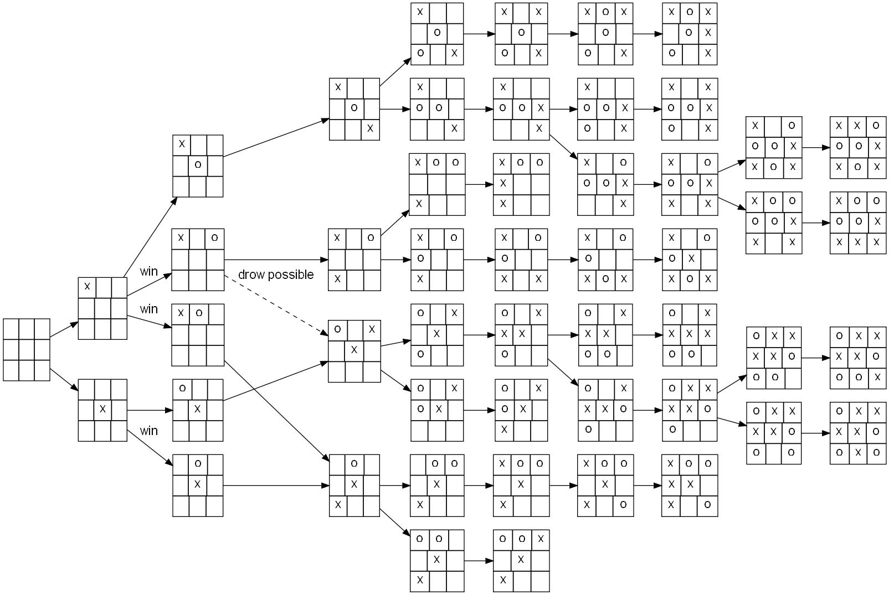
It also works when precise heuristics can be derived in a reasonable time.
This is the principle of IBM DeepBlue which was the first Chess AI to beat a world champion (Garry Kasparov) in 1995.
Carefully engineered heuristics (with the help of chess masters) allowed DeepBlue to search 6 moves away what is the best situation it can arrive in.
But it does not work in Go because its branching factor (250 actions possible from each state) is too huge: the tree explodes very soon.
- \(250^{6} \approx 10^{15}\), so even if your processor evaluates 1 billion nodes per second, it would need 11 days to evaluate a single position 6 moves away…
Game tree of Go

1 - AlphaGo
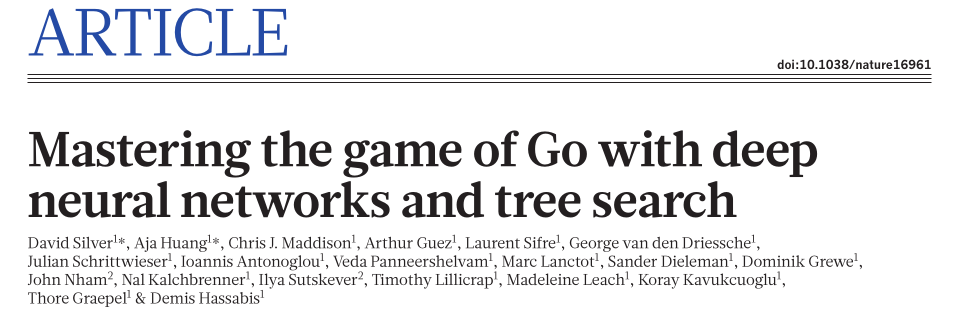
AlphaGo
AlphaGo uses four different neural networks:
The rollout policy and the SL policy network use supervised learning to predict expert human moves in any state.
The RL policy network uses self-play and reinforcement learning to learn new strategies.
The value network learns to predict the outcome of a game (win/lose) from the current state.
The rollout policy and the value network are used to guide stochastic tree exploration in Monte Carlo Tree Search (MCTS) (MPC-like planning algorithm).

AlphaGo - supervised pretraining
- Supervised learning is used for bootstrapping the policy network.
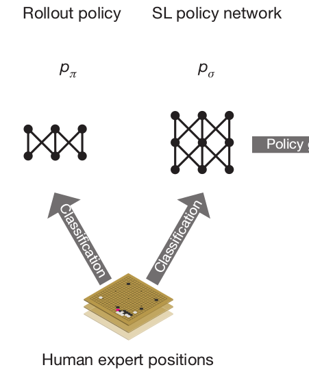
A policy network \(\rho_\sigma\) is trained to predict human expert moves:
30M expert games have been gathered: input is board configuration, output is the move played by the expert.
The CNN has 13 convolutional layers (5x5) and no max-pooling.
The accuracy at the end of learning is 57% (not bad, but not sufficient to beat experts).
A faster rollout policy network \(\rho_\pi\) is also trained:
Only one layer, views only part of the state (around the last opponent’s move).
Prediction accuracy of 24%.
Inference time is only 2 \(\mu\)s, instead of 3 ms for the policy network \(\rho_\sigma\).
AlphaGo - self-play RL
The SL policy network \(\rho_\sigma\) is used to initialize the weights of the RL policy network \(\rho_\rho\), so it can start exploring from a decent policy.
The RL policy network then plays against an older version of itself (\(\approx\) target network) to improve its policy, updating the weights using Policy Gradient (REINFORCE):
\[ \nabla_\theta \mathcal{J}(\theta) = \mathbb{E}_{s \sim \rho_\theta, a \sim \pi_\theta}[\nabla_\theta \log \pi_\theta(s, a) \, R ] \]
where \(R\) = +1 when the game is won, -1 otherwise.
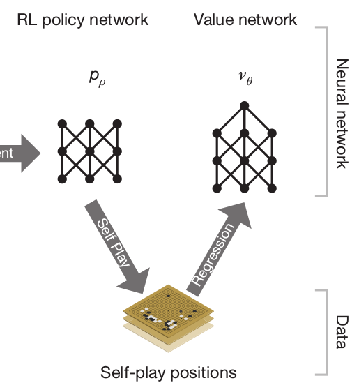
The idea of playing against an older version of the same network (self-play) allows to learn offline.
The RL policy network already wins 85% of the time against the strongest AI at the time (Pachi), but not against expert humans.
A value network \(\nu_\theta\) finally learns to predict the outcome of a game (+1 when winning, -1 when losing) based on the self-play positions generated by the RL policy network.
AlphaGo
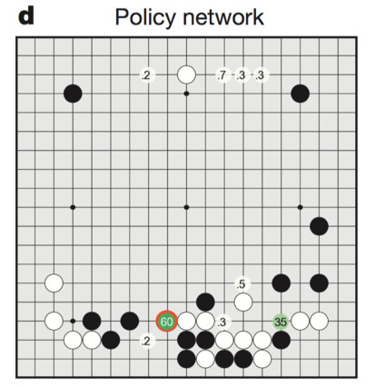
- The policy network learns the probability of selecting different moves.
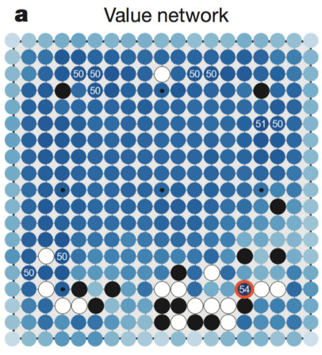
- The value network learns to predict the value of any possible state under the learned policy.
Monte Carlo Tree Search

The final AlphaGo player uses Monte Carlo Tree Search (MCTS), which is an incremental tree search (depth-limited), biased by the Q-value of known transitions.
The game tree is traversed depth-first from the current state, but the order of the visits depends on the value of the transition.
MCTS was previously the standard approach for Go AIs, but based on expert moves only, not deep networks.
Monte Carlo Tree Search
- In the selection phase, a path is found in the tree of possible actions using Upper Confidence Bound (UCB).
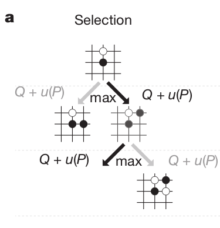
The probability of selecting an action when sampling the tree depends on:
Its Q-value \(Q(s, a)\) (as learned by MCTS): how likely this action leads to winning.
Its prior probability: how often human players would play it, given by the SL policy network \(\rho_\sigma\).
Its number of visits \(N(s, a)\): this ensures exploration during the sampling.
\[a_t = \text{argmax}_a \, Q(s, a) + K \cdot \frac{P(s, a)}{1 + N(s, a)}\]
Monte Carlo Tree Search
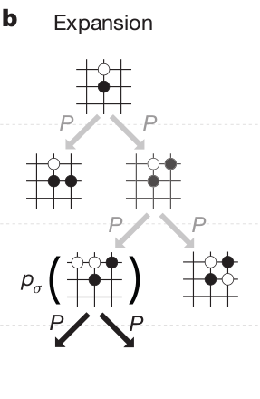
In the expansion phase, a leaf state \(s_L\) of the game tree is reached.
The leaf is expanded, and the possible successors of that state are added to the tree.
One requires a model to know which states are possible successors, but this is very easy in Go.
\[s_{t+1} = f(s_t, a_t)\]
- The tree therefore grows every time a Monte Carlo sampling (“episode”) is done.
Monte Carlo Tree Search
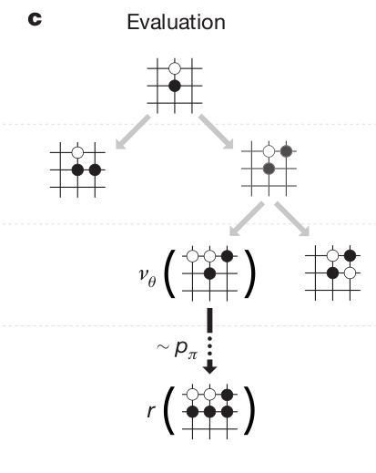
In the evaluation phase, the leaf \(s_L\) is evaluated both by
the RL value network \(\nu_\theta\) (how likely can we win from that state)
a random rollout until the end of the game using the fast rollout policy \(\rho_\pi\).
The random rollout consists in “emulating” the end of the game using the fast rollout policy network.
The rollout is of course imperfect, but complements the value network: they are more accurate together than alone!
\[V(s_L) = (1 - \lambda) \, \nu_\theta(s_L) + \lambda \, R_\text{rollout} \]
- This solves the bias/variance trade-off.
Monte Carlo Tree Search
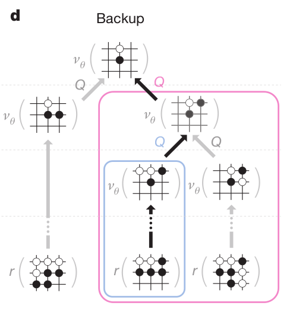
- In the backup phase, the Q-values of all actions taken when descending the tree are updated with the value of the leaf node:
\[Q(s, a) = \frac{1}{N(s, a)} \sum_{i=1}^{n} V(s_L^i) \]
This is a Monte Carlo method: perform one episode and update the Q-value of all taken actions.
However, it never uses real rewards, only value estimates.
The Q-values are learned by using both the learned value of future states (value network) and internal simulations (rollout).
Monte Carlo Tree Search
The four phases are then repeated as long as possible (time is limited in Go), to expand the game tree as efficiently as possible.
The game tree is repeatedly sampled and grows after each sample.
When the time is up, the greedy action (highest Q-value) in the initial state is chosen and played.
For the next move, the tree is reset and expanded again (MPC replanning).
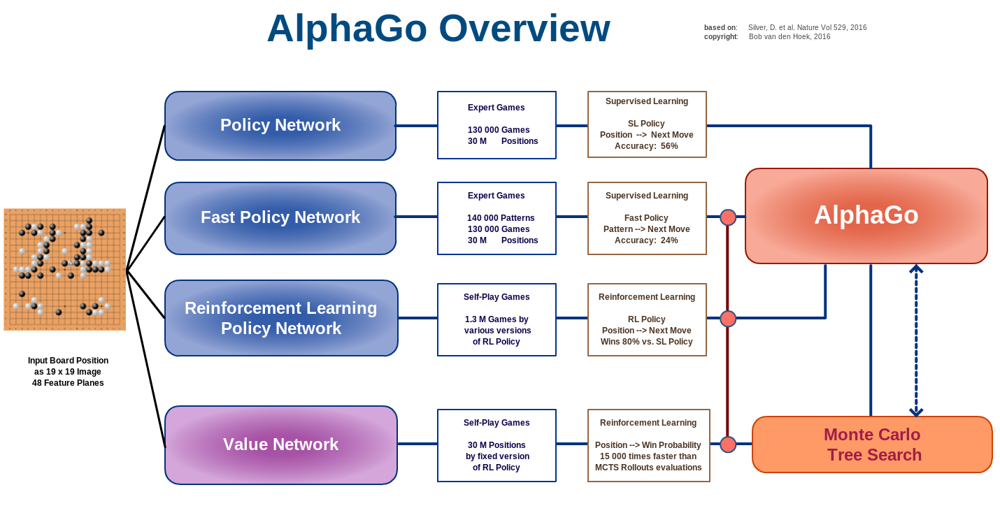
In the end, during MCTS, only the value network \(\nu_\theta\), the SL policy network \(\rho_\sigma\) and the fast rollout policy \(\rho_\pi\) are used.
The RL policy network \(\rho_\rho\) is only used to train the value network \(\nu_\theta\). i.e. to predict which positions are interesting or not.
However, the RL policy network can discover new strategies by playing many times against itself, without relying on averaging expert moves like the previous approaches.
AlphaGo
AlphaGo was able to beat Lee Sedol in 2016, 19 times World champion.
It relies on human knowledge to bootstrap a RL agent (supervised learning).
The RL agent discovers new strategies by using self-play: during the games against Lee Sedol, it was able to use novel moves which were never played before and surprised its opponent.
The neural networks are only used to guide random search using MCTS: the policy network alone is not able to beat grandmasters.
Training took several weeks on 1202 CPUs and 176 GPUs.
But is Go that hard compared to robotics?
Fully deterministic. There is no noise in the rules of the game; if the two players take the same sequence of actions, the states along the way will always be the same.
Fully observed. Each player has complete information and there are no hidden variables. For example, Texas hold’em does not satisfy this property because you cannot see the cards of the other player.
The action space is discrete. A number of unique moves are available. In contrast, in robotics you might want to instead emit continuous-valued torques at each joint.
We have access to a perfect simulator (the game itself), so the effects of any action are known exactly. This is a strong assumption that AlphaGo relies on quite strongly, but is also quite rare in other real-world problems.
Each episode/game is relatively short, of approximately 200 actions. This is a relatively short time horizon compared to other RL settings which may involve thousands (or more) of actions per episode.
The evaluation is clear, fast and allows a lot of trial-and-error experience. In other words, the agent can experience winning/losing millions of times, which allows is to learn, slowly but surely, as is common with deep neural network optimization.
There are huge datasets of human play game data available to bootstrap the learning, so AlphaGo doesn’t have to start from scratch.
2 - AlphaZero
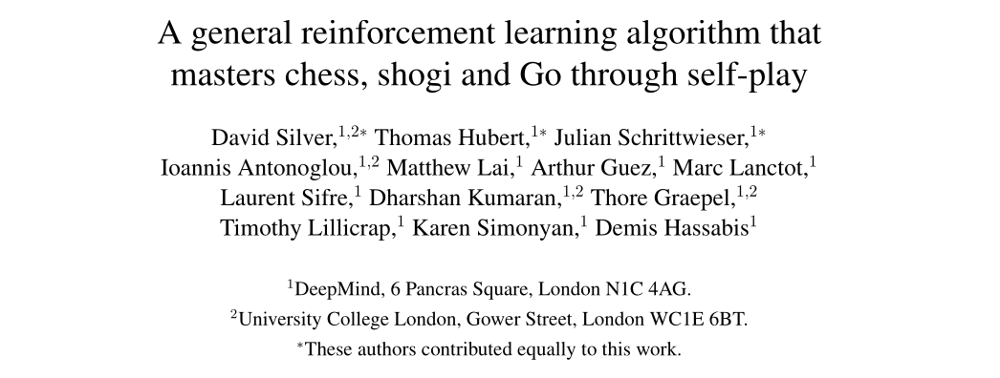
https://deepmind.com/blog/article/alphazero-shedding-new-light-grand-games-chess-shogi-and-go
AlphaZero

AlphaZero
- AlphaZero totally skips the supervised learning part: the RL policy network starts self-play from scratch!

The RL policy network uses MCTS to select moves, not a softmax-like selection as in AlphaGo.
The policy and value networks are merged into a two-headed monster: the convolutional residual layers are shared to predict both:
- The policy \(\pi_\theta(s)\), which is only used to guide MCTS (prior of UCB).
\[a_t = \text{argmax}_a \, Q(s, a) + K \cdot \frac{\pi_\theta(s, a)}{1 + N(s, a)}\]
- The state value \(V_\varphi(s)\) for the value of the leaves (no fast rollout).
AlphaZero
- The loss function used to train the network is a compound loss:
\[ \mathcal{L}(\theta) = (R − V_\varphi(s))^2 - \pi_\text{MCTS}(s) \, \log \pi_\theta(s) + c ||\theta||^2 \]
The policy head \(\pi_\theta(s)\) learns to mimic the actions selected by MCTS by minimizing the cross-entropy (or KL).
The value network \(V_\varphi(s)\) learns to predict the return by minimizing the mse.
AlphaZero
Initialize neural network.
Play self-play games, using 1,600 MCTS simulations per move (which takes about 0.4 seconds).
Sample 2,048 positions from the most recent 500,000 games, along with whether the game was won or lost.
Train the neural network, using both A) the move evaluations produced by the MCTS lookahead search and B) whether the current player won or lost.
Finally, every 1,000 iterations of steps 3-4, evaluate the current neural network against the previous best version; if it wins at least 55% of the games, begin using it to generate self-play games instead of the prior version.
Repeat steps 3-4 700,000 times, while the self-play games are continuously being played .
AlphaZero
- By using a single network instead of four and learning faster, AlphaZero also greatly reduces the energy consumption.

AlphaZero

The same algorithm can also play Chess and Shogi!
The network weights are reset for each game, but it uses the same architecture and hyperparameters.
After only 8 hours of training, AlphaZero beats Stockfish with 28-72-00, the best Chess AI at the time, which itself beats any human.
This proves the algorithm is generic and can be applied to any board game.
3 - MuZero
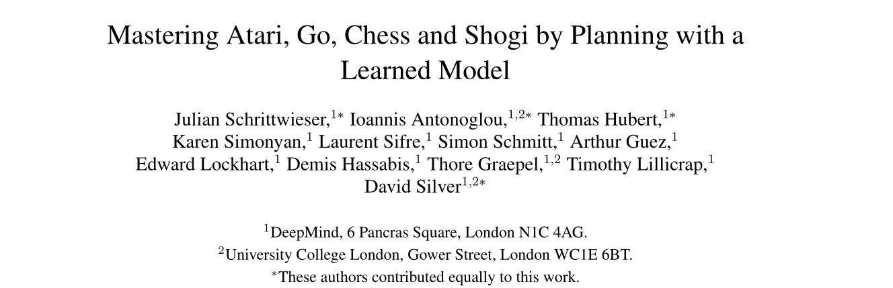
MuZero
MuZero is the latest extension of AlphaZero (but see EfficientZero https://arxiv.org/abs/2111.00210).
Instead of relying on a perfect simulator for the MCTS, it learns the dynamics model instead.
\[s_{t+1}, r_{t+1} = f(s_t, a_t)\]

MuZero
MuZero
MuZero is composed of three neural networks:
The representation network \(s= h(o_1, \ldots, o_t)\) (encoder) transforming the history of observations into a state representation (latent space).
The dynamics model \(s', r = g(s, a)\) used to generate rollouts for MCTS.
The policy and value network \(\pi, V = f(s)\) learning the policy with PG.
MuZero
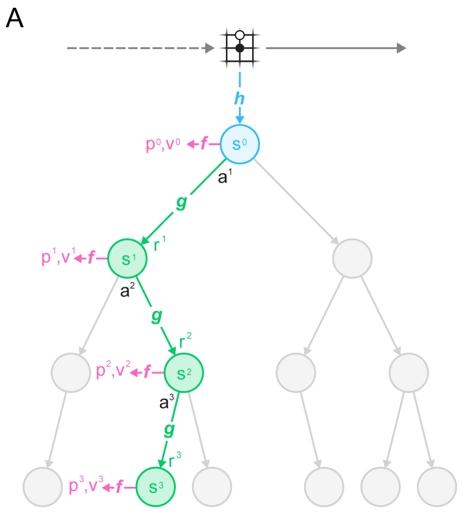
The dynamics model \(s', r = g(s, a)\) replaces the perfect simulator in MCTS.
It is used in the expansion phase of MCTS to add new nodes.
Importantly, nodes are latent representations of the observations, not observations directly.
This is a similar idea to World Models and PlaNet/Dreamer, which plan in the latent space of a VAE.
Selection in MCTS still follows an upper confidence bound using the learned policy \(\pi\):

MuZero
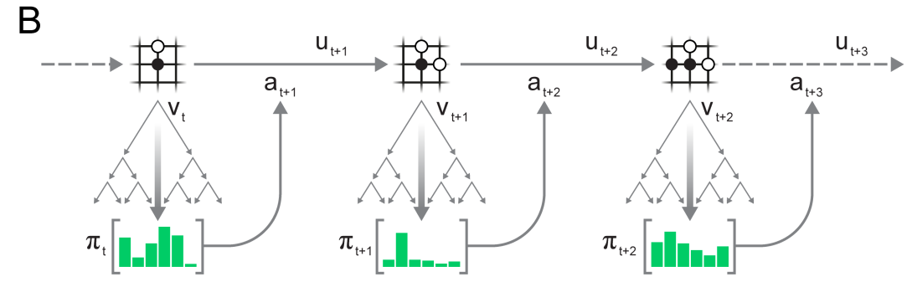
The actions taking during self-play are taken from the MCTS search as in AlphaZero.
Note that the network plays each turn: there is additional information about whether the network is playing white or black.
Self-played games are stored in a huge experience replay memory.
MuZero
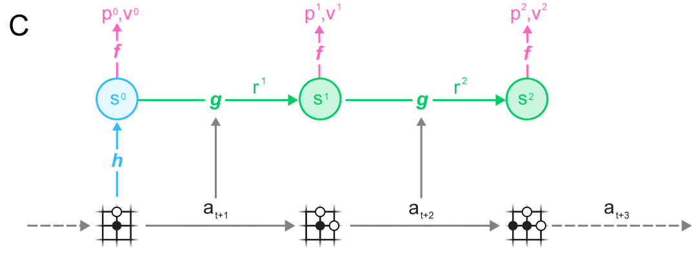
- Finally, complete games sampled from the ERM are used to learn simultaneously the three networks \(f\), \(g\) and \(h\):
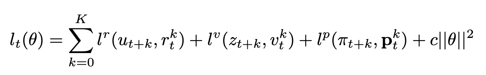
MuZero
MuZero beats AlphaZero on Chess, Go and Shogi, but also R2D2 on Atari games.
The representation network \(h\) allows to encode the Atari frames in a compressed manner that allows planning over raw images.

MuZero
- A nice series of blog posts by David Foster explaining how to implement MuZero:
https://medium.com/applied-data-science/how-to-build-your-own-muzero-in-python-f77d5718061a
But…
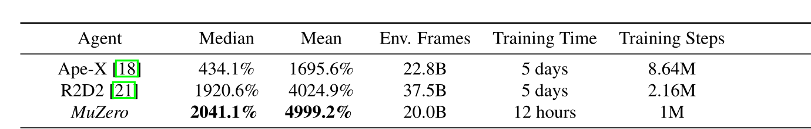
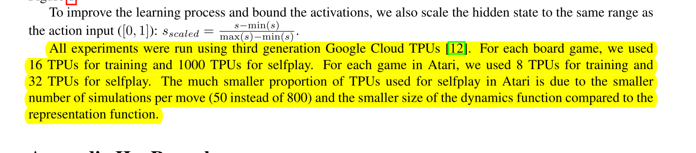
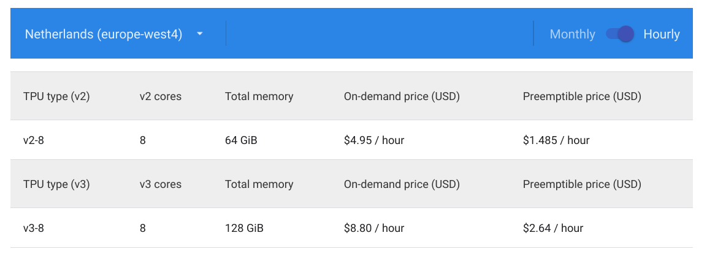